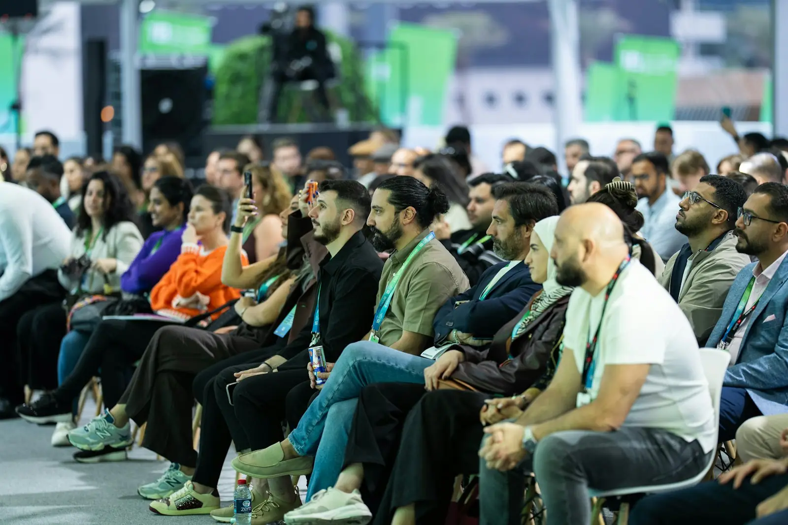
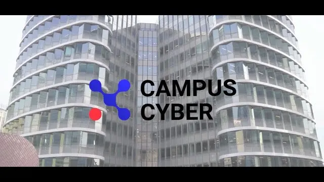

Industriels et dirigeants
Rencontrer les donneurs d'ordre publics, comprendre les priorités capacitaires et identifier les financements adaptés à votre montée en cadence.
Une journée pour réunir les acteurs publics, industriels, scientifiques et financiers qui construisent la souveraineté technologique française et européenne de demain.
Seconde édition organisée par l'Institut National des Affaires Stratégiques en partenariat avec l'établissement public territorial Paris Ouest La Défense.
DualTech 2026 est porté par un think tank indépendant et par le territoire du premier quartier d'affaires européen.
 Découvrir un territoire qui s'engage pour la souveraineté et l'innovation
Découvrir un territoire qui s'engage pour la souveraineté et l'innovation
Filières industrielles représentées
Au travers de tables rondes, pitch sessions, expositions et ateliers, DualTech met en lumière, tout au long de la journée, les entreprises et industriels des filières stratégiques à double usage qui contribuent à la souveraineté industrielle et technologique.
L'industrie duale conçoit des technologies dont les applications servent à la fois les marchés civils et les besoins de défense et de sécurité. Le quantique, le spatial, la robotique, l'intelligence artificielle et les matériaux avancés en sont les principales filières.
Double usage
Technologies aériennes et systèmes de nouvelle génération
Applications duales des avancées biologiques
Sécurisation décentralisée des échanges
Nouvelles générations de systèmes d'information
BTP, génie civil et infrastructures résilientes
Protection des systèmes critiques, cyberdéfense et cybersurveillance
Analyse et valorisation des données massives
Semi-conducteurs, composants et systèmes embarqués
Production, réseaux, stockage et autonomie énergétique
Technologies durables à impact stratégique
Sécurité, résilience et systèmes de surveillance
Applications souveraines de l'IA, données, logiciels avancés et calcul haute performance
Technologies navales, maritimes et systèmes en environnement marin
Mines, ressources stratégiques et industries extractives
Solutions innovantes pour la santé et le bien-être
Véhicules terrestres et nouvelles solutions de déplacement
Lasers, capteurs optiques et technologies photoniques
Capteurs, communications et calcul quantique
Systèmes autonomes et robotique de nouvelle génération
Satellites, infrastructures orbitales et technologies spatiales de nouvelle génération
Édition 2026
Décideurs publics, industriels, chercheurs et investisseurs réunis le temps d'une journée, sur accréditation, à La Défense.
Programme du 26 novembre
Tables rondes, keynotes, sessions de pitch, espace exposants et learning expeditions rythmeront cette journée entièrement consacrée à l'innovation duale et à la souveraineté technologique.
Voir le programme completStéphane Boujnah, CEO et Chairman of the Managing Board d'Euronext
Thales, MBDA, Safran AI et GICAT autour de la table
Emmanuel Chiva, Président-directeur général de l'ONERA
Expansion, Eurazeo Tech, Aldoria et Rothschild & Co
Trois lauréats en Robotique, Santé et Deeptech
Stéphane Ouaki, European Innovation Council and SMEs Executive Agency (EISMEA)
Speakers 2026
Dirigeants industriels, investisseurs, élus et responsables publics : plus de quarante intervenants et animateurs se succéderont sur scène.
Voir les 34 intervenants
CEO et Chairman of the Managing BoardEuronext

Président-directeur généralOffice National d’Études et de Recherches Aérospatiales (ONERA)

Head of DepartmentEuropean Innovation Council and SMEs Executive Agency (EISMEA)

ChairmanEurazeo Tech

Senior Vice President, Business Strategy & Future PortfoliosMBDA

Founding PartnerExpansion Ventures

Co-founder, EVP DevelopmentWandercraft

Directeur Technology Intelligence, Assessment, InsertionThales

Sous-directeur, chef du service des biens à double usageMinistère de l’Économie et des Finances

MaireMairie de Neuilly-sur-Seine

DirectriceFrench Tech Grand Paris

Associé gérantRothschild & Co
Participer
Rencontrer les donneurs d'ordre publics, comprendre les priorités capacitaires et identifier les financements adaptés à votre montée en cadence.
Accéder à un dealflow qualifié de startups, PME et ETI stratégiques, et confronter vos thèses d'investissement à celles des acteurs publics.
Porter vos orientations devant l'écosystème réuni et repérer les technologies matures pour accélérer leur transfert vers l'industrie.
L'expérience DualTech
Tables rondes, keynotes, pitch sessions, expositions, ateliers et learning expeditions : DualTech met en lumière, tout au long de la journée, les acteurs des filières stratégiques à double usage.
 01
01 03
03
04 05
05Photos d'illustration.
Écosystème
Institutions publiques, acteurs du financement, organisations industrielles, entreprises et médias spécialisés accompagnent DualTech.
Associer votre organisation
2026 / La DéfenseInfos pratiques
La seconde édition de DualTech se déroulera au sein du Campus Cyber, lieu totem de la cybersécurité fédérant un écosystème composé de plus de 250 acteurs publics et privés et favorisant les collaborations ainsi que les synergies innovantes. Grâce à ses initiatives et à son rayonnement, le Campus Cyber s'impose comme un centre névralgique national et européen, contribuant à accélérer le développement de solutions face aux défis à venir, tant en matière de cybersécurité que d'intelligence artificielle.
Campus Cyber, 5-7 rue Bellini, 92800 Puteaux
RER A et Transilien L, station La Défense Grande Arche. Métro 1, terminus La Défense.
Sur accréditation nominative, pièce d'identité demandée à l'entrée.
Site accessible aux personnes à mobilité réduite.
L'industrie duale conçoit des technologies dont les applications servent à la fois les marchés civils et les besoins de défense et de sécurité. Le quantique, le spatial, la robotique, l'intelligence artificielle et les matériaux avancés en sont les principales filières.
L'événement s'adresse aux représentants étatiques, aux industriels, aux dirigeants de PME et ETI stratégiques, aux investisseurs, aux chercheurs et aux acteurs du financement de l'innovation. L'accès se fait sur inscription validée par l'organisation.
Plusieurs niveaux de partenariat existent, du soutien institutionnel à la prise de parole en plénière. Le dossier est disponible sur demande depuis la page dédiée.
L'édition 2026 se tient au Campus Cyber, à La Défense, le 26 novembre 2026. Voir le Campus Cyber sur Google Maps.
400 places sont disponibles sur inscription préalable. Chaque demande est examinée par l'organisation avant confirmation.